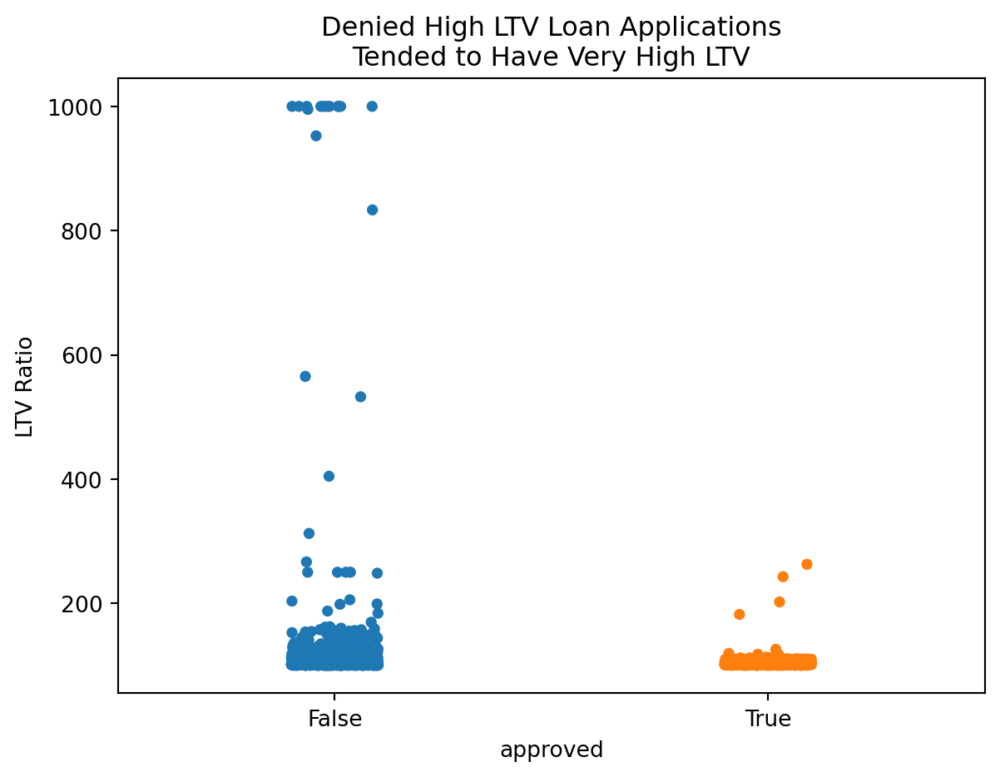
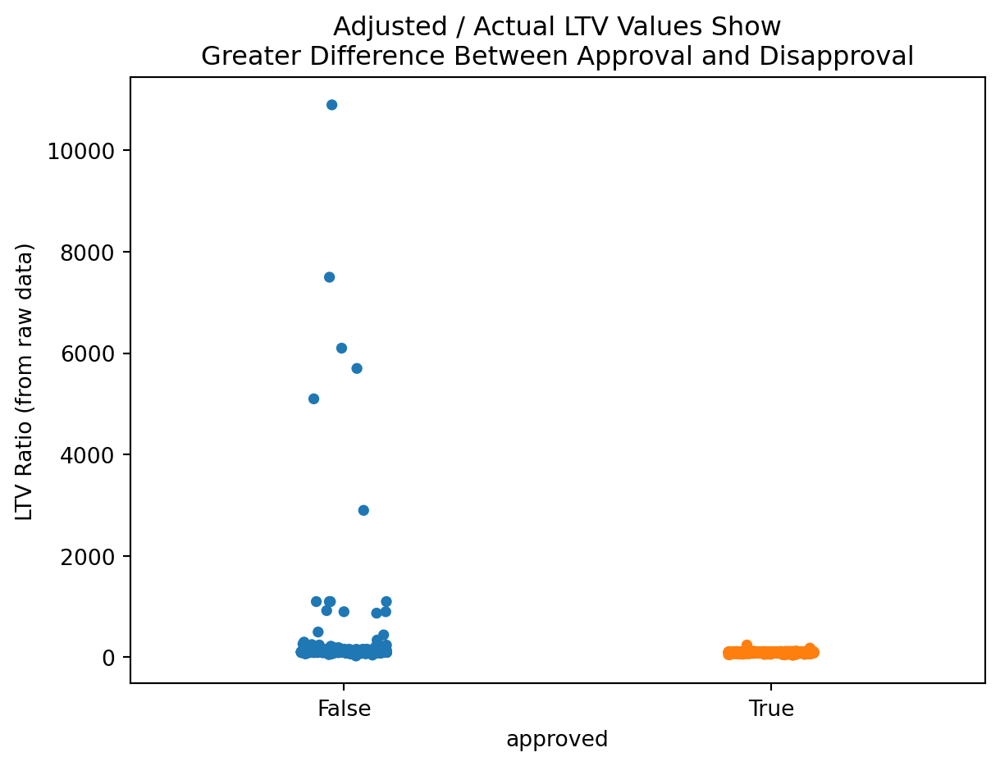
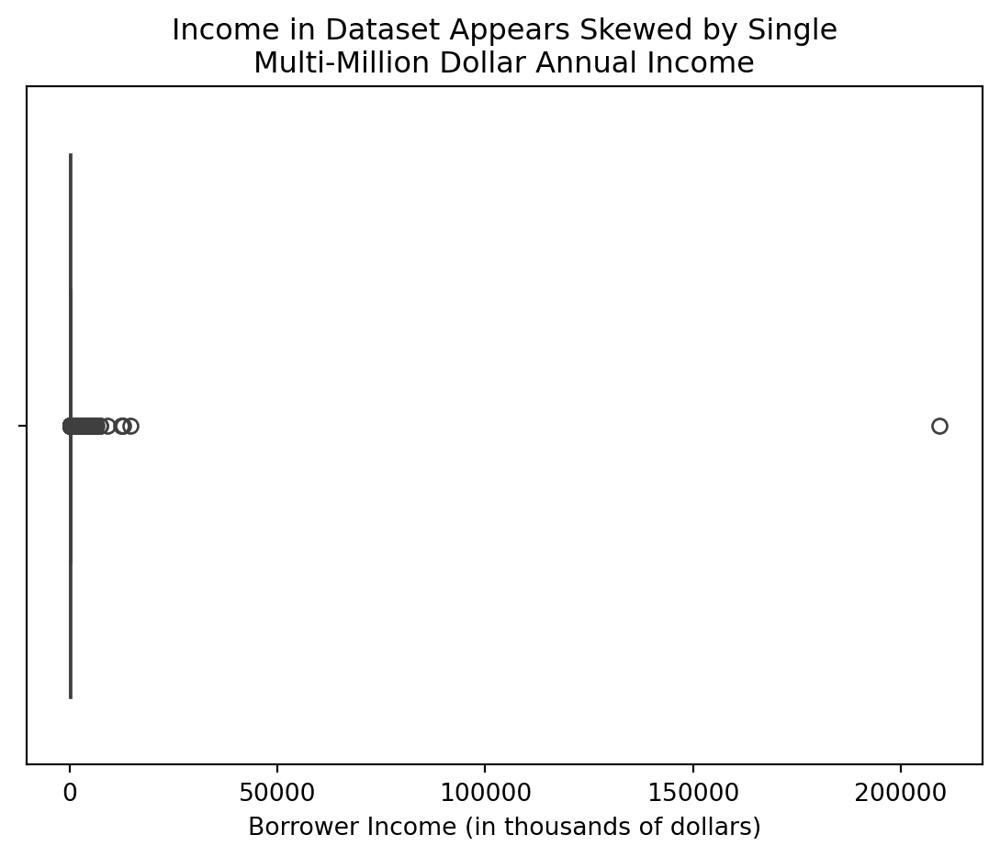

| Valid Classes | HMDA Encoding | Binary Encoding |
|---|---|---|
| American Indian or Alaska Native | 1 | 1 |
| Asian | 2 | 2 |
| Asian Indian | 21 | 4 |
| Chinese | 22 | 8 |
| Filipino | 23 | 16 |
| Japanese | 24 | 32 |
| Korean | 25 | 64 |
| Vietnamese | 26 | 128 |
| Other Asian | 27 | 256 |
| Black or African American | 3 | 512 |
| Native Hawaiian or Other Pacific Islander | 4 | 1024 |
| Native Hawaiian | 41 | 2048 |
| Guamanian or Chamorro | 42 | 4096 |
| Samoan | 43 | 8192 |
| Other Pacific Islander | 44 | 16384 |
| White | 5 | 32768 |
| Information not provided by applicant in mail, internet, or telephone application | 6 | 65536 |
| Not applicable | 7 | 131072 |
| No co-applicant | 8 | 262144 |
2 Data Gathering and Exploratory Analysis
In efforts to answer the established research questions, data was collected, predominantly, from the HMDA database for the top 5 lenders listed within CNN’s reporting. As both CNN and the Lehigh University articles leveraged this data, working with and examining the same type of data is ideal in the pursuit of furthering the research.
2.1 Links to Data and Code
The outcomes of the work performed in this section are present in multiple locations. The data itself was too large to include as part of the github repository for this effort.
2.2 Data Gathering
To pursue the established research objectives, the following resources were identified and leveraged as data sources:
CNN provides explicit data selection, cleaning, and transformation information at the base of their first article in the section labeled “How We Reported This Story.” The scope of this research includes the scope identified by CNN, as the nature of their filtration and focus could be ascribed to what one would consider being part of the American dream - the ability to attain a first loan for a single-family property as a primary residence, not for the purpose of business or commerce. The CNN article predominantly leveraged 2022 and prior year data, whereas this research will inspect 2023 data.
Lenders in question, listed in the graphics for the first CNN article, are identified via the GLEIF API. HMDA Data solely contains the Legal Entity Identifier (LEI) in each record as opposed to the name of the entity. In order to perform aggregate analysis and labeling of data as being linked to one of these organizations, it is necessary to query another source to identify the appropriate LEIs for use in querying HMDA. Furthermore, HMDA is a large database, and being able to provide filtering conditions substantially reduces the size of the returned data. Absent key filters, large volumes are returned in a single file. At the same time, the number of filters that can be supplied to the HMDA API simultaneously is limited, so filtering by organization and other key filters will minimize the data pull before further cleaning.
The HMDA API provides simple access to a wide array of data on mortgages. Additionally, the API provides a well-documented data dictionary that spells out the returned features and their meanings in the context of the Loan Application Register. An API query returns a total of 99 columns with quantitative and qualitative data on the prospective borrower, the property they seek to purchase, aspects and features of the loan, and the final action taken on the loan application. Some of these columns may exceed the scope of this research, whereas many others are necessary and important to the established research questions. Finding creative and effective means of reducing dimensionality is key.
Neither of the API endpoints leveraged in data collection for this research required an API key, thus simplifying the data gathering process.
The source code for data gathering efforts in this research is located here.
Example use of the GLEIF API:
import requests
endpoint = "https://api.gleif.org/api/v1/lei-records"
params = {
'page[size]':100, #specify number of records to return per page
'page[number]':1, #specify the page number to return within the same search scope
'filter[entity.names]':'NAVY FEDERAL CREDIT UNION' #provide an organization
}
requests.get(endpoint,params)For the GLEIF API, the JSON response will contain the LEI for organizations with similar names to what is provided in the filter[entity.names] parameter. Depending on how specific one is with the name provided, this could produce a long list of results. This was the case when examining larger banks like JP Morgan and Wells Fargo while building the code for this research. In some cases, the GLEIF API returned 400 records. When this occurs, it is necessary to make use of the page[size] and page[number] parameters for this API.
In the case of gathering 400 results, in order to pull all of them into data records via use of this API, one would need to perform 4 API calls, each time updating the page[number] parameter to the next valid value. The API response also always provides a lastPage value for valid responses under the path response.meta.pagination.lastPage, which one can use for iteration if needed to extract all LEIs for an entity.
Below depicts example use of the HMDA API in Python:
hmda_endpoint = "https://ffiec.cfpb.gov/v2/data-browser-api/view/csv"
hmda_params = {
'years':'', #specify the year or list of years for which you seek to query
'loan_types':1, #conventional loans only
'leis':'' #will change/update based upon what orgs we're downloading
}
resp = requests.get(endpoint,params)
with open('/file/path/here.csv','wb') as f:
f.write(resp.content)
f.close()Of note for the HMDA endpoint in this case is the fact that it natively returns record data in CSV format. As such, the means to store the data is relatively simple, requiring no substantial parsing of JSON content to process the data into record or dataframe format.
The data, from the initial API queries and prior to further cleaning and tailoring, is located here.
2.3 Data Cleaning
The primary methods of cleaning in this research revolve around dimensionality reduction and row reduction. The goal for cleaning is to minimize the number of columns in the dataset to key quantitative and qualitative features holding potential use in modeling, eliminating records out of the scope of this research, and handling blank/missing/incorrect values in the remaining records.
2.3.1 Dimensionality Reduction
2.3.1.1 Collapsing Redundant Columns with Binary Encoding
This research collapses the following columns to deduplicate data and reduce columnar dimensionality:
Approximately 29 columns in the data contain categorical information that can be encoded in binary and summed into a single column to retain all data while reducing dimensionality. These columns pertain to applicant and co-applicant race and ethnicity, the automated underwriting systems used by organizations to support decision making in approving or denying loan applications, and reasons for loan denial, if applicable.
Since each of these columns can take on multiple values, the HMDA dataset owners have allowed for up to 5 columns for each of these categorical variables. By translating each possible value to a unique binary encoding (with number of bits equal to the number of classes, and solely a single 1 in each encoding), the sum across multiple columns will provide for a unique value containing all classifications in a single categorical variable.
Furthermore - this transformation addressses some potential biases in CNN’s methods. Their report excluded records in the case of mixed-race applicants and co-applicants as being members of a racial group. The binary encoding allows for their inclusion as being part of such groups; while individuals of mixed race may not be fully part of any single group, they remain part of it.
The data contain multiple column datapoints for the ethnicity and race of applicants and co-applicants for a total of 20 additional columns (e.g. “co-applicant_race-1, co-applicant_race-2…”). Not all of these columns contain viable data. An individual can have multiple races and ethnicities. To allow for retaining of the data while also eliminating unnecessary blank columns, these columns are collapsed to a single column, each - reducing the data by 16 columns.
Another set of column collapses are performed on the ‘aus-’ (automated underwriting system) and ‘denial_reason’ columns. There are 5 columns in the source data containing the different system(s) used by lenders to support underwriting decision making processes. The denial_reason is rich with potentially important information that could lend itself to the identification of latent or unavailable variables (e.g. credit score, income verification, etc). These columns are collapsed in the same manner as for the aforementioned race and ethnicities of applicants.
Each value was translated from the digit representing it to instead a binary representation with a number of bits equivalent to the number of valid classes available for the variable from the data dictionary. After each value in each column was mapped to a bitwise representation, the sum across each column was taken to produce a final column with bits containing all of the original information. This transformation enables simple bitwise AND operations to identify records that meet a specific condition (or combination of conditions) while also eliminating columnar redundancy.
| Valid Classes | HMDA Encoding | Binary Encoding |
|---|---|---|
| Hispanic or Latino | 1 | 1 |
| Mexican | 11 | 2 |
| Puerto Rican | 12 | 4 |
| Cuban | 13 | 8 |
| Other Hispanic or Latino | 14 | 16 |
| Not Hispanic or Latino | 2 | 32 |
| Information not provided by applicant in mail, internet, or telephone application | 3 | 64 |
| Not applicable | 4 | 128 |
| No co-applicant | 5 | 256 |
| Valid Classes | HMDA Encoding | Binary Encoding |
|---|---|---|
| Desktop Underwriter (DU) | 1 | 1 |
| Loan Prospector (LP) or Loan Product Advisor | 2 | 2 |
| Technology Open to Approved Lenders (TOTAL) Scorecard | 3 | 4 |
| Guaranteed Underwriting System (GUS) | 4 | 8 |
| Other | 5 | 16 |
| Internal Proprietary System | 7 | 32 |
| Not applicable | 6 | 64 |
| Exempt | 1111 | 128 |
| Valid Classes | HMDA Encoding | Binary Encoding |
|---|---|---|
| Debt-to-income ratio | 1 | 1 |
| Employment history | 2 | 2 |
| Credit history | 3 | 4 |
| Collateral | 4 | 8 |
| Insufficient cash (downpayment, closing costs) | 5 | 16 |
| Unverifiable information | 6 | 32 |
| Credit application incomplete | 7 | 64 |
| Mortgage insurance denied | 8 | 128 |
| Other | 9 | 256 |
| Not applicable | 10 | 512 |
Examining Table 2.4, for instance consider a cell value of 96 in the ‘denial_reason’ column. There are two unique binary encoding values - 32 and 64, that produce this sum. The value 96, then, would signify a loan that was denied both for having ‘Unverifiable Information’ and for ‘Credit application incomplete’. Similarly, referencing Table 2.1, a value of 32770 in this column would signify a person whose races are Asian (32768) and White (2) (2+32768=32770).
This binary numeric representation of categorical data allows the column to contain multiple distinct and potentially impactful datum while reducing dimensionality. E.g. to filter the dataset to records pertaining to the race Asian, the filter can be performed by selecting records where the binary AND of 32768 & [column_value] = 32768. Other races may also be present in the filtered records, but all Asians will be captured.
Leveraging the columns natively for tasks such as clustering may not be effective or efficient, and could pose challenges in performing unsupervised learning. Further cleaning may be necessary for such tasks, but collapsing and retaining the data ensures its availablity for further transformation and cleaning. For instances, the re-splitting and pivoting of these columns into boolean values could be leveraged in association rule mining or in Bernoulli Naive Bayes analyses.
Notice also that encodings for not available or not applicable types of data are higher values within each encoding list. This actually provides a very simple data validation technique, and allows for the identification or elimination of potentially erroneous records. Namely any value:
within the exclusive interval (65536,131072), or greater than 131072 for applicant_race
within the exclusive intervals (65536,131072) and (131072,262144), or greater than 262144 for co-applicant_race
within the exculsive interval (64, 128), or greater than 128 for applicant_ethnicity
within the exclusive intervals (64,128) and (128,256), or greater than 256 for co-applicant_ethnicity
within the exclusive interval (64,128), or greater than 128 for aus (automated underwriting system)
greater than 512 for denial_reason
will signify an erroneous record. Namely, if any value is found to include “Not Applicable” in conjunction with another valid selection, one of the two selections were selected in error, and the data is not reliable. As such, these records can be filtered from the source data. As such, records meeting the above criteria are removed from the source data.
Because the totality of racial and ethnicity information can now be contained within a single column, the derived_ columns for ethnicity and race can be dropped from the dataset.
2.3.1.2 Column Elimination
The following list of columns were eliminated from the source data
| Column Dropped | Reason |
|---|---|
| activity_year | 2023 Data Only |
| derived_msa-md | Using county_code |
| census_tract | Using county_code |
| derived_loan_product_type | Available in other columns |
| derived_dwelling_category | Available in other columns |
| conforming_loan_limit | Project scope |
| lien_status | Project scope |
| reverse_mortgage | One value after scope applied |
| business_or_commercial_purpose | Project scope |
| negative_amortization | One value after scope applied |
| occupancy_type | Project scope |
| construction_method | Project scope |
| manufactured_home_secured_property_type | Project scope |
| manufactured_home_land_property_interest | Project scope |
| submission_of_application | Project scope |
| initially_payable_to_institution | Project scope |
| derived_ethnicity | Available in other columns |
| derived_race | Available in other columns |
| loan_type | Project scope |
| prepayment_penalty_term | Project scope |
| applicant_age_above_62 | Available in other columns |
| co-applicant_age_above_62 | Available in other columns |
| total_points_and_fees | <1% of records have values |
| rate_spread | <1% of records have values |
| multifamily_affordable_units | <1% of records have values |
| lei | Substituting company name |
| state_code | Using county_code |
| hoepa_status | Single value in column after scope applied |
2.3.2 Row Elimination
The initial pull from the HMDA API allowed solely for filtering by one or two filters. This effort pulled data for 5 selected lenders in the year 2023, for conventional loans only. To reduce the data to the same scope stipulated in the CNN article, row records must further be eliminated based upon the following criteria:
exact duplication of another row (from the source data, before any transformations are applied). The nature of the data is such that the probability of an exact duplicate of 99 column values between two records is negligible, and as such exact duplicates should be ignored.
scoping to same frame as CNN:
lien_status != 1, or only first lien secured properties
total_units not in [1,2,3,4], or only 1-4 unit homes
conforming_loan_limit != ‘C’, or only conforming loans
business_or_commercial purpose != 2, or non-commercial and non-business properties
occupancy_type != 1, or primary residence
loan_purpose != 1, or for the purchase of a home
records in which there is no value for county_code
records for which the loan would be neither approved nor denied: when the action_taken value is 4 (Application Withdrawn) or 5 (File closed for incompleteness).
records that have invalid values as defined in the binary encoding section above for 6 variables (applicant_race, co-applicant_race, applicant_ethnicity, co-applicant_ethnicity, aus, denial_reason).
2.3.3 Ordinal Encoding
The following columns are re-encoded as ordinal data:
total_units
applicant_age
debt_to_income_ratio
2.3.4 Missing and Blank Values
The following aspects of the dataset have the potential for missing or blank values. The reporting requirements vary for the different columns in the HMDA LAR, and the blanks and missing values can occur for a multitude of reasons:
applicant didn’t provide the information
applicant withdrew their application
data was not entered or submitted by the institution
institution did not have or receive the data for the applicant or their prospective property
the column may not be applicable or filled because the application was denied, or was not applicable for the particular loan circumstances (e.g. an introductory rate period wouldn’t be applicable for an adjustable rate mortgage)
Each of the following is replaced by the median value of the variable when the data is grouped by state_code and total_units (e.g. number of rooms in the home):
property_value
loan_to_value_ratio. special note: when property_value and loan_amount are available for a record, this value is filled with the value of the loan amount (times 100) divided by the listed property value. Otherwise, any blanks are filled with the median loan to value ratio when the data is grouped by state and number of rooms.
Each of the following is replaced by the median value of the variable when the data is grouped by state_code and company (e.g. institution processing the mortgage application):
lender_credits
intro_rate_period
interest_rate
origination_charges
discount_points
total_loan_costs
- Note: Whenever the grouping by state_code and company produced N/A values, these were replaced with the value 1 in the event of a need for logarithmic transformations on these variables.
Each of the following is replaced with the mode of the variable when the data is grouped by state_code and company (e.g. institution processing the mortgage application):
intro_rate_period
debt_to_income_ratio
- Note: Whenever the grouping by state_code and total_units produced N/A values, these were replaced with the value 0 as they better align with categorical variables than as numeric, and may not undergo transformations.
Another common blank value included the income feature. Blanks and missing values are replaced with the value from the column ffiec_msa_md_median_family_income divided by 1000. This value is an approximation for median family income in the specific metropolitan statistical area (MSA) in which the home is located.
2.3.5 Incorrect Column Values
Some values of interest for inspection include loan_to_value_ratio, property_value, and loan_amount, which should, in theory, all be related and have reasonable values. A first-lien for-the-purpose-of-purchase, conventional, conforming loan is highly unlikely to have a value greater than 100%. This is because a savvy lender would not secure a property as collateral for a loan that greatly exceeds its value.
That being said, there may be cases were this ratio could stretch further based upon qualities of the borrower and status of the market, and especially if the borrower seeks to include the overage as part of plans for improvements of the home, or covering closing costs or other mortgage requirements - in combination with the borrower having an excellent credit score or having a very high income. The case of high loan-to-value-ratio (henceforth LTV Ratio), may be unlikely, but is not impossible.
Below is an examination for each lender for extreme values in LTV ratio:
There appear to be some extreme values to the high right for each lender, in some cases with the ratio nearing 1000%. To examine further, whether or not the loan was approved should be considered, and if the loan was denied, the reason for denial should be considered as well.
If any values in this extreme range consist of loans that were denied, and reasons for denial include items such as “insufficient collateral”, then these items may simply be extreme case outliers that are valid and real as opposed to errors in the data.
Considering a range of 100% or greater loan_to_value_ratio, the following information is available:
In Figure 2.2, it is clear that the majority of loans in this category were denied by lenders. There is a subset of loans that were approved (~40%), and examining further to examine factors such as the loan_to_value_ratios in this group, as well as reasons for denial amongst the denied applications, is necessary before determining need for identifying these records as errors vs. outliers.
This plot makes it apparent that many of these high LTV ratio loan applications are likely legitimate. Many of them were denied on the bases of debt to income ratio and collateral (e.g. the property is insufficient collateral to cover the risk of the loan).
That being said, it’s also necessary to examine the 40% of loans that were actually approved in this window.

From Figure 2.4, its apparent that the approved loans in this excess range tended to be on the much lower end of the spectrum, seemingly hovering just above 100%, whereas the denied applications span from just over 100% all the way up to 1000%. All in all, it would seem these extreme values, in both the cases of approved and denied loans, are legitimate values.
A remaining concern is for potential discrepancy in the loan to value ratio itself. It’s appears odd that many data points bunch up at the 1000% mark as opposed to going above or below it, like it’s an arbitrary cap on the actual value. Below the same plot is examined, but instead the Loan to Value Ratio is replaced the value of Loan Amount * 100 / Property Value.

It would seem that the 1000% mark may indeed be an arbitrary cap, or a potential error of some sort. Per the Consumer Financial Protection Bureau on reporting requirements, the value for the combined loan to value ratio is to be “the ratio of the total amount of debt secured by the property to the value of the property relied on in making the credit decision.”
In most other cases in which the values sit below 100%, this calculated value is within a small unit difference of the reported value. This may be because the decimal places on the decision are only to be included if those decimal points were relied upon to make the decision on whether or not to approve the loan.
In light of the exploration on loan to value ratio, the feature loan_to_value_ratio will be replaced with the value of \(\frac{100\cdot\text{loan amount}}{\text{property value}}\) . In cases where one of these values is blank, the loan_to_value_ratio will be filled with the median value for loan_to_value_ratio when the data is grouped by state_code and total_units (or number of rooms) in the home.
Another feature worth exploring is income. This feature, per the HMDA LAR Data Dictionary, is in thousands of dollars. There are millionaires and even billionaires in the United States. Generally, though, one might expect to see an exponential distribution of income in the source dataset. Furthermore, one should expect to see a narrow string of values getting thinner and thinner as it approaches the upper end of the dataset. Inspecting income with a boxplot, there are some clear challenges:

A cursory inspection of this data suggests that there may be a single, erroneous outlier sitting at a value of approximately $209M worth of income, compressing the visibility of the boxplot down to nearly nothing. It is possible that this datapoint is real and correct, and that there was a single, very wealthy applicant for a mortgage in the data.
Producing the same plot, absent the outlier, however, displays similar results:
However, below is an examination of the data with and without this high-end datapoint using kernel density estimation for the natural logarithm of income:
With the exception of some deviations from normality in the central portions of the curve, these plots appear to showcase a normally distributed variable. Examining the mean and standard deviations for the log of income, with and without the extreme outlier, produces the following:
| mean | std | |
|---|---|---|
| With Outlier | 4.725800 | 0.623842 |
| Without Outlier | 4.725769 | 0.623654 |
The mean and standard deviation of the log-transformed feature, income, appears to retain the same features of central tendency with or without this extreme value. Provided that a log transformation of the feature is used within any models, this outlier should have little to no impact on training and testing data, as the underlying parent distribution can be approximated by that of the normal distribution \(N(4.726,0.624)\) in either case. As such, the row will be retained, and the value will not be adjusted (minus the log-transformation).
2.3.6 Cleaned Columns
Prior to cleaning, there were numerous blank or not applicable values within the data. The below image depicts the state of a subset of the data, after initial download.
The column volume is not done justice by this image; the original dataset held nearly 100 columns with large swaths of blank and missing values. Through the methods described previously, this data was appropriately scoped, transformed, cleaned, and simplified for further use.
The final results of the cleaning process are too large to fully depict in images here. Despite a substantial cleaning effort, there remains a large volume of columns (~50 down from 100) of varying types. Here, some key cleanups performed during the cleaning effort are highlighted:

One can see that there are no blanks in this sector of the dataset, and that there is a wider array of values and reasonable variablility in the columns, examining record by record. There may be additional work and adjustments to be performed in the realm of cleaning, but having populated columns, filled with median and modal values, provides a point of departure for further examination and analysis.
The above depiction of the collapsed columns is a substantial dimensionality reduction while retaining all of the underlying data. Each of these columns were originally 5 columns in the source data (less denial_reason, which was 4 columns).
In any case where the value in one of these columns holds an exact power of 2, it means that only one of those 4-5 original columns held a value - values like 1, 16, 32, 64, 128, 256, 512, 32768, 65536, 131072, and 262144 (all present in this graphic).
This means there were nearly 24 columns worth of blanks for each record depicted in the above image. One can nearly count on their fingers the number of instances for these records in which more than one of those columns had legitimate values. This collapsing of records while retaining data is good compression and retention for storage and future modeling.
The cleaned dataset can be found and downloaded here. Alternatively, one can clone this research project’s GitHub Repository, run the data pulling script, and then run the data cleaning script, in order to reproduce the same dataset.
2.4 Further Exploratory Data Analysis
To examine the data under similar conditions as CNN for 2023 data, below is a plot of the top 5 lenders and their approval rates for select racial groups, controlling for no other variables:
The above appears to flow from 2022’s findings into 2023 - that, at least for NFCU, the trend appears to continue under the specified scope with approval rates of about 76% for White applicants, and 43.8% for Black/African American Applicants. Comparing Figure 2.9 to CNN’s figures, the outcomes are remarkably similar for 2023.
Similar exploration into sex and age is also of interest for this study:
This chart also reveals some interesting trends, not just for NFCU, but across lenders. Notably - when no sex is provided by the applicant, 100% of loans across lenders received approval of some sort. Somewhat similarly, for lenders like JP Morgan, Rocket Mortgage, and Wells Fargo, the institutions had high approval rates in cases for which the applicant selected both sexes on their application.
Lastly, as it is pertinent to the established research questions, examination of differences in outcomes for reported age is necessary.
This examination reveals similar results as for sex; when no age is reported or documented, it appears that the approval rate approaches 100% for applicants. However, it is not the case when race is not reported. In Figure 2.9, one can see that in the case of no race reported, approval rates for such mortgages ranged from 62.9% (NFCU) to 98.6% (JP Morgan).
These comparisons, however, are simply numerical and do not establish any kind of a cause and effect relationship in either case, for any of the variables. Just because the outcomes in 2023 when gender or age were not reported to these lenders were nearly 100% of the time an approved mortgage, does not mean that one not reporting their gender or age on a mortgage application guarantees that they will be approved by one of these 5 lenders.
2.5 Last Thoughts on Source Data
The provided visuals and exploration in this research thus far are observations of a snapshot in time - they, in and of themselves, do not establish cause-and-effect relationships or the presence of statistically significant differences in outcomes between protected classes and lenders.
The goals of this research include bi-directional modeling. While machine learning modeling on its own does not elucidate a cause-and-effect relationship between variables, it comes closer than simple observations or statistical analyses. Performing bi-directional modeling (can available features and subject’s age/gender/race predict their outcome? and can a subject’s outcome and features predict the subject’s age/gender/race) takes additional steps in the direction of causality.
Establishing significant differences can show a difference, but not the cause. Establishing models that effectively predict show that the statistical differences in groups can be leveraged effectively to predict outcomes, but also do not establish cause. Exploration of latent variables, interjection and intervention of available and latent variables, and further research, are all needed to establish causality.
More exploration is necessary within this data, and potentially additional cleaning and transformations. Few if any numeric variables were scaled or transformed to collapse them all within similar ranges. This will be needed for building certain models within this research effort. Further understanding of categorical variable associations and relationships need further exploration and study. This will be an ongoing effort throughout this research.